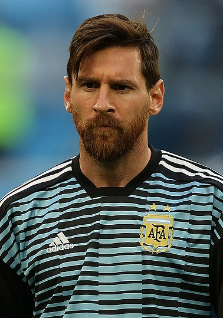

Ліоне́ль Андре́с Ме́ссі Куччитті́ні (ісп. Lionel Andrés Messi Cuccittini; нар. 24 червня 1987 року, Росаріо, Аргентина) — аргентинський футболіст, плеймейкер, нападник французького клубу «Парі Сен-Жермен». Рекордсмен за кількістю забитих м'ячів у складі збірної Аргентини та «Барселони». Семиразовий володар призу «Золотий м'яч», зокрема: 2009, 2019 та 2021 роки за версією France Football, 2010, 2011, 2012, 2015 роки за версією об'єднаного трофея від France Football та ФІФА. Шестиразовий володар титулу найкращий футболіст світу за версією ФІФА, зокрема: 2009, 2010, 2011, 2012, 2015, 2019 роки. Шестиразовий володар Золотого бутса УЄФА (2010, 2012, 2013, 2017, 2018, 2019). Другий футболіст світу 2007, 2008, 2013, 2014, 2016 та 2017 років.
Кожна велика зірка футболу пройшла свій шлях, тому майбутнім чемпіонам необхідно знати, як їх сучасні кумири досягли свого успіху. ⠀ Саме бабуся побачила в Ліонеля Мессі задатки майбутнього футболіста і звернула на це увагу всіх членів сім'ї. Це вона записала улюбленого внука в ФК «Грандола», коли тому було лише 5 років.️ ⠀ У 11 років у Мессі лікарі виявили рідкісне захворювання - дефіцит гормону росту. ⠀ Але керівник каталонського клубу Карлес Решак, побачивши, як він тренується, був просто в захваті. Чоловік прийняв молодого бійця в колектив і навіть повністю оплатив лікування. ⠀ До основного складу «Барси» Лео потрапив в листопаді 2003 року. Тоді про футболіста дізнався весь світ. Перший гол у складі «Барселони» аргентинець забив у 2005 році, коли йому було всього 17 років. ⠀ Мессі перший футболіст в спортивній історії, який отримував «Золотий м'яч» чотири рази. Після кожного голу він дивиться в небо, так як присвячує свої перемоги померлої бабусі, яка порадила батькові відвести його в секцію футболу.️ ⠀ Цілеспрямованість і наполегливість, за допомогою яких він впевнено долав усі перешкоди, привели Мессі до справжнього успіху. ⠀ Розгледіти таланти дитини легко, а ми у школі «FootyBall» допоможемо розкрити їх повністю. ⠀ І пам’ятайте, чемпіонами не народжуються - чемпіонами зростають Основні переваги гравця: